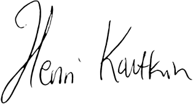

Politiikan kuukausikatsaus 11/2023: Vähemmän investointeja, vähemmän velkataakkaa Järvenpäälle
Politiikan kuukausikatsaus 11/2023: Vähemmän investointeja, vähemmän velkataakkaa Järvenpäälle
Tervetuloa politiikan kuukausikatsaukseeni marraskuun osalta. Tällä kertaa eniten puhuttaneita teemoja ovat olleet Järvenpään kaupungin vuoden 2024 talous sekä lähivuosien velanotto ja investoinnit. Myös HSL on kirvoittanut runsaasti kansalaiskeskustelua, sillä aiempi päätös HSL:ään liittymisestä on tulossa pian päivitettäväksi. Lisäksi Palmian tuottaman kouluruuan laatu on puhututtanut paikallislehden sivuilla.
Mitä Järvenpään taloudessa tapahtuu vuonna 2024?
Marraskuun kaupunginvaltuusto käsitteli merkittävimpänä esityslistan kohtina Järvenpään ensi vuoden veroprosentteja sekä talousarviota 2024, taloussuunnitelmaa 2024–2027 ja 10 vuoden investointisuunnitelmaa vuosille 2024–2033.
Valtuusto päätti lopulta äänestysten jälkeen pyöristää tänä vuonna olleen 7,61 %:n kunnallisveroprosenttimme 7,6:een, eikä korottaa sitä kaupunginjohtaja Iiris Laukkasen esityksen mukaisesti 7,8:aan. Samalla päätettiin säästää lisää kaupungin menoista vuodesta 2025 alkaen 200 000 euroa jo aiemmin päätetyn kulukuurin lisäksi. Valtuusto päätti, että nämä lisäsäästövaatimukset eivät saa kohdistua opetukseen ja kasvatukseen, kotikuntakorvauksiin ja työmarkkinatuen kuntaosuuteen.
Etenkin koulutuksen suojeleminen lisäleikkauksilta oli tärkeä päätös, sillä toteutamme jo nyt perusasteen ja toisen asteen koulutuksemme hyvin kustannustehokkaasti.
Valtuusto päätti myös karsia Järvenpään vuosien 2024–2027 investoinneista yhteensä 40 miljoonaa euroa. Karsimisesitykset niistä hankkeista, joita viivästetään tai jätetään toteuttamatta, tuodaan päätöksentekoon erikseen ensi vuoden alussa.
Pidän investointien karsimista haasteellisena tehtävänä. Kohonneet korot ja kustannukset edellyttävät kuitenkin nyt tarkkaa harkintaa, mitä kannattaa tehdä nyt, ja minkä toteuttamista voitaisiin kenties siirtää hieman myöhemmäksi tulevaisuuteen. Näin toimivat monet muutkin toimijat tällä hetkellä. Priorisoivat menoja ja investointeja, kun rahan hinta on korkojen noustua aiempaa suurempi.
En myöskään voi kannattaa verojen korottamista, koska suomalaisten kotitalouksien säästämisaste on liikkunut tänä vuonna paljolti pakkasen ja nollan tuntuman välissä. Veronkiristys kohdistuisi täten jo valmiiksi kustannusten nousun kanssa kamppailevien järvenpääläisten lompakkoihin. En pidä oikeudenmukaisena tasapainottaa Järvenpään kaupungin taloutta siten, että järvenpääläisten veronmaksajien taloustilanteet heikkenevät.
Kaupungin velkavuoren hallinta on avainasemassa myös menojemme hillitsemisessä. Korkomenot rasittavat Järvenpään kaupungin taloutta merkittävästi, ja korkoihin menevä raha on aina pois opetuksesta, kulttuurista, hyvinvoinnista ja muista järvenpääläisille suunnatuista palveluista.
Talouteemme tulee kuitenkin liittymään paljon riskejä, joista ensimmäisenä eteemme jo marraskuussa iski ylimääräinen valtionosuuksien leikkaus sote-uudistuksen jäjiltä. Onneksi pääministeri Orpon hallitus päätti heti porrastaa valtionosuuksien heikentymistä lähivuosien osalta, jotta meillä kuntapäättäjillä on aikaa sopeuttaa Järvenpään menoja hyvinvointialueiden jälkeiseen tulotasoon.
Järvenpään oma JUST – kannattava sijoitus vai tappiollinen taseriski?
Kaupunkimme osallistui aikanaan paikallisten sosiaali- ja terveyspalveluiden turvaamiseen rakennuttamalla Järvenpään Uuden Sosiaali- ja Terveyskeskuksen (JUSTin). Modernin terveyskeskuskampuksen avulla Järvenpään terveyspalvelut keskitettiin pääosin saman katon alle. JUSTin ja viereisen pysäköintirakennuksen rakentaminen maksoivat yli 60 miljoonaa euroa, ja rakennukset ovat edelleen kaupungin omistuksessa. JUST on nyt vuokrattu Keski-Uudenmaan hyvinvointialueelle, Keusotelle.
Rakentaminen rahoitettiin lähes täysin velkarahalla, ja siksi nousseet korot ovat nyt rapauttaneet näiden kaupungin omistamien kiinteistöjen kannattavuutta omistuksina. JUST ei ole tällä hetkellä kaupungille tuottava investointi, vaan kaupunki joutuu kuluvana vuonna rahoittamaan omistamiaan kiinteistöosakeyhtiöitään yli 700 000 eurolla. Nämä rahat voitaisiin hyvin käyttää muuhunkin, mutta tällä hetkellä ne menevät epäedullisesta vuokrasopimuksesta aiheutuvien tappioiden kattamiseen.
Edellisten valtuustokausien aikana tehdyn, edelleen voimassa olevan vuokrasopimuksen mukaan esimerkiksi nousevia ylläpito- ja rahoituskustannuksia voidaan kattaa vuokrankorotuksella vasta jälkijunassa, jolloin vuokratuotto uhkaa usein jäädä matalammaksi kuin ylläpidosta ja omistamisesta aiheutuvat kustannukset.
On lisäksi täysin mahdollista, että tulevaisuudessa säästöpaineiden keskellä elävä Keski-Uudenmaan hyvinvointialue joutuu päättämään toimintojensa uusista supistamisista (ja siten pienentää JUSTista vuokrattavia neliöitään). Tällöin Järvenpään saama vuokratuotto voi heikentyä entisestään.
Sotepalveluiden valtionrahoitus voi tiukentua lähitulevaisuudessa entisestään, jolloin maantieteellisesti melko lähekkäin sijaitsevat Tuusulan uusi terveyskampus ja JUST saattavat kokea muutoksia Keusoten 2020-luvun lopun palveluverkkosuunnitelmissa.
Olisikin ajankohtaista selvittää nyt huolellisesti, kannattaisiko kaupungin myydä JUSTiin liittyvät kiinteistöosakeyhtiönsä uusien tappioiden minimoimiseksi. Mahdollinen alaskirjausriski taseessa on olemassa, vaikka hyvinvointialueen palveluverkko ainakin toistaiseksi näyttää JUSTin vuokrasuhdetta jatkavankin.
Vakaa taloudenpito perustuu huolellisiin suunnitelmiin. JUSTiin liittyvien kuvioiden selventäminen onkin avainasemassa Järvenpään talouden ennustettavuuden parantamisessa. Mikäli selvitystyötä ei nyt tehdä, voimme myöhemmin kokea uusia negatiivisia yllätyksiä omistustemme johdosta. Kaupungin ei kannata mielestäni toimia kiinteistösijoittajana, jos taloutemme ei kestä siihen liittyviä mahdollisia negatiivisia yllätyksiä.
Järvenpää päättää pian uudelleen, liittyykö se HSL:n jäseneksi vai ei
Helsingin seudun liikenne -kuntayhtymä (HSL) ja Järvenpään liittyminen sen jäseneksi on puhututtanut niin Keski-Uusimaassa kuin sosiaalisessa mediassakin marraskuun aikana. Järvenpää teki edellisellä valtuustokaudella 2019 päätöksen liittyä HSL:ään, jos sen lisäehtona saisimme tiheämmät junavuorot kaupungin HSL:lle vuosittain maksamien kuntaosuuksien vastineeksi. Silloin hintalapuksi arvioitiin vuodessa 2,1 miljoonaa.
Koronan myötä HSL:n talous on kuitenkin ollut todella suurissa vaikeuksissa, ja kuntayhtymä on joutunut tekemään raskaita talouspäätöksiä. On vuorotellen korotettu kuntien maksamia kuntaosuuksia ja lippuhintoja. Samalla Järvenpäälle alun perin annettu tarjous peruutettiin HSL:n toimesta, ja uudeksi hintalapuksi (kuntaosuudeksi) arvioitiin 3,3 miljoonaa euroa vuodessa, eli hinta- arvio nousi muutamassa vuodessa 57 %. Tätä uutta hintalappua kaupunki ei kyennyt enää sulauttamaan talouteensa niin helposti.
Kaupunginvaltuustolle tulee pian eteen uusi päätös, jossa puntaroidaan HSL-jäsenyyden vaihtoehtoa uusin hinnoin. Talouspaineissa elävä HSL joutuu valitettavasti keräämään rahaa paljon jäsenkunniltaan toimintansa rahoittamiseksi. Tämä tarkoittaisi sitä, että jos nyt liittyisimme HSL:n jäseneksi, joutuisimme sekä tekemään entisestään raskaita (miljoonaluokan) leikkauksia muihin kunnan palveluihin että korottamaan verotusta lisää. Niin kalliiksi HSL on nykyarvion mukaan tulossa.
Kannatan itse joukkoliikennettä ja olen HSL:n kannattaja, mutta hintalappu ja sen seuraukset mietityttävät vahvasti. On nimittäin otettava huomioon, että jo nyt HSL:n hinta kaupungille on kova, mutta ennusteiden mukaan HSL:n talous edellyttää sen olevan vielä suurempi esimerkiksi 10 vuoden päästä.
Näkisin mielelläni Järvenpään HSL:n jäsenenä tulevaisuudessa. Jäsenyys helpottaisi yhtenäisen lippujärjestelmän ja liikennesuunnittelun kautta järvenpääläisten liikkumista nykytilanteeseen nähden. Tällä hetkellä on vain vaarana, että HSL:n talous on niin huonossa jamassa, että hinta on jäsenkunnille todella kova – ja samalla silti jouduttaisiin korottamaan lippuhintoja merkittävästi.
HSL:n talouden kehittymistä on seurattava tarkasti, ja mietittävä jäsenyyttä vakavasti heti kun tilanne vaikuttaa helpommalta sekä HSL:n että Järvenpään kannalta. Tulevat suuret infrahankkeet ja niistä maksettavat infrakorvaukset eivät tule pienentämään vuosittaista kuntaosuutta tulevina vuosina. Vuosi vuodelta joutuisimme siis sopeuttamaan taloutta muualta, mikäli liittyisimme nyt kuntayhtymän jäseneksi.
Nykymuodossaan Järvenpään koko bussiliikenne maksaa noin miljoona euroa vuodessa, ja tähän saamme valtionavustusta vuosittain 300 000–400 000 euroa. Maksammekin lopulta nettona, lipputulojen vähentämisen jälkeen, hieman hieman alle puoli miljoonaa euroa bussiliikenteen järjestämisestä itse. Junaliikenteestä VR:lle ei makseta euroakaan, sillä kyseessä on valtion ostoliikenne.
On todella suuri harmi, että tilanne on HSL:n kanssa mikä on. Toivon Järvenpään edistävän aktiivisella yhteydenpidolla neuvotteluja järvenpääläisille sopivimman ratkaisun löytämiseen. Arvelen, että jonain päivänä Järvenpää on kyllä HSL:n jäsen, mutta ajankohta on vielä epävarma. Jos HSL saa suuret taloushaasteensa ratkaistua, olisin ensimmäisenä ilmoittautumassa äänestämään kuntayhtymään liittymisen puolesta!
Maistuuko Palmian kouluruoka Järvenpään koululaisille?
Keski-Uusimaa uutisoi (KU 22.11.2023), että Järvenpään kouluruoan laatu on kaupungin saaman palautteen perusteella heikentynyt viimeisen parin vuoden aikana. Tuoreessa kouluterveyskyselyssä 4.–5.luokkalaisista vain 40 % arvioi kouluruuan laadultaan hyväksi. Koko maan keskiarvo oli 58 prosenttia, ja tuloksemme alitti niin Keravan (51 %) kuin Tuusulankin (50 %) lukemat.
Monet ovat arvelleet laadun heikentyneen, kun Järvenpää muutama vuosi sitten myi Palmialle oman ateria- ja siivouspalveluyhtiönsä Jatsin. Myyntihetkellä Palmian omisti Helsingin kaupunki, mutta yhtiö on sittemmin myyty kansainväliselle pääomasijoitusyhtiö Mutaresille.
Oli kuitenkin mielenkiintoista havaita, että peruskoulua käyvät arvioivat pääasiassa samaa, Palmian keskuskeittiöllä JUSTissa valmistettua ruokaa, paljon huonommaksi kuin esimerkiksi Järvenpään lukiolaiset. Lukiota käyvien mielestä kouluruoka oli laadultaan hyvää 58 %:n mielestä. Sama ruoka maistuu siis erilaiselta eri ikäisten mielestä, eivätkä kaikki oppilaat ja opiskelijat pidä ruokaa huonolaatuisena.
Palmian ravintola- ja ruokapalveluiden toimialajohtaja Ritva Mähönen arvelikin artikkelissa, että peruskoululaisten kriittisen suhtautumisen taustalla saattaa olla muutakin kuin ruoan laatu itsessään. Esimerkiksi kotona syöty ruoka ja sen monipuolisuus voivat vaikuttaa myös kouluruuan maistuvuuteen.
Ruoan maistuvuutta ja hävikkimääriä on kuitenkin syytä seurata huolellisesti – ja kouluterveyskyselyn tuloksia on otettava huomioon Palmian suuntaan käytävissä neuvotteluissa. Maksamme Palmialle vuosittain miljoonia euroja kouluruuan tuottamisesta, jolloin sen on oltava niin ravitsemussuositusten mukaisesti terveellistä kuin maistuvaakin.
On meidän kaikkien etu, ettemme maksa ruuasta, joka ei maistu hyvältä ja päätyy lopulta hävikiksi. Maksuton koululounas tarjoaa oppijoille heidän koulupäiviinsä energiaa, jota ei voi korvata lähikaupan eineksillä ja paistopisteen tuotteilla.
Mukavaa adventtiajan alkua toivottaen
